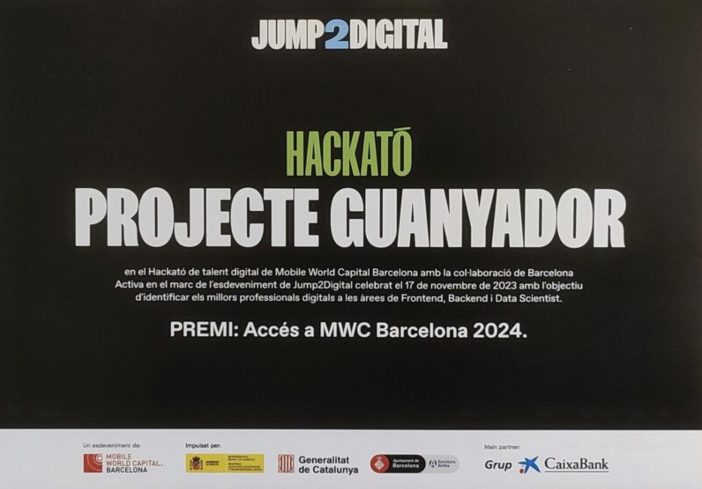

Chronicles of Pride, July 2024
3rd place winner
Our project, Chronicles of Pride, provides a safe space for users to become more familiar with the LGBTQIA+ community’s history, vocabulary and trailblazers of the movement. We've created an interactive learning experience focused on the general history, important events and people.
Conatum UK, March 2025
I successfully migrated Conatum UK from WordPress / WooCommerce to Shopify, streamlining its e-commerce operations for a more seamless and efficient experience. The transition improved site performance, simplified product management, and enhanced the overall shopping experience with Shopify’s intuitive interface and robust features. This migration and subsequent site improvements I made ensure better scalability and easier maintenance for the brand.
BCN Secreta, March 2024
1st place winner
Over two days through Jump2Digital, our 9-person team was able to create a web application focused on decongesting tourism in Barcelona. By using a heat map of the city to disperse visitors to lesser-known cultural points of interest they could get to on foot, bike or public transport, we were able to promote sustainable tourism to the city while illuminating some of Barcelona’s hidden gems.
UK Shrimp, February 2025
Working with Shopify, I designed and developed the UK Shrimp website to provide a clean, user-friendly platform for shrimp enthusiasts in the UK. The site showcases essential information about freshwater shrimp care, supplies, and communities, with a focus on accessibility and engaging visuals. Built with performance and responsiveness in mind, it ensures a seamless experience across all devices.